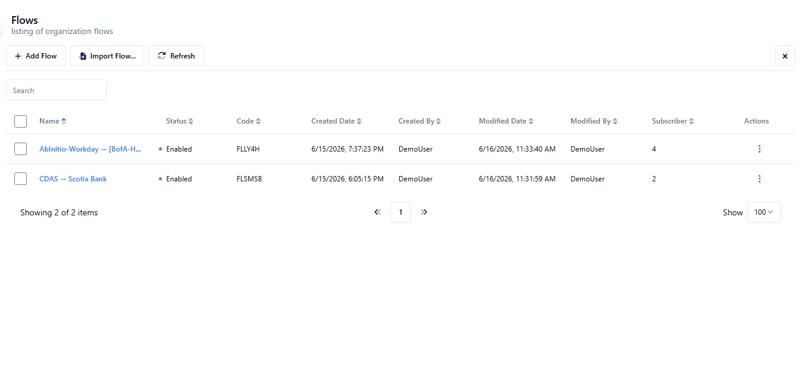

Internal to Internal: Invoice Image & Mailbox Distribution
Invoice Image (bills of lading PDFs) pushes files into a FedEx Net mailbox. Hundreds of internal and external receivers pull their files via SFTP GET on port 60022. Files up to 45–50 GB.
Why This Use Case Is the Most Complex
This use case introduces key concepts around Trading Partner ID (the key that ties sender to receiver in FedEx Net) and pull-based delivery (the sender deposits the file into a mailbox first, and the receiver collects it on their own schedule via SFTP GET). On the isolation front — Boomi MFT provides isolation of each source and target by default, so rather than being a new concept to configure, it is simply how the platform works out of the box.
The invoice files are bills of lading PDFs — enormous by file transfer standards (up to 45–50GB). This is also the only use case with hundreds of trading partners, making multi-tenant isolation the central architectural concern.
Current FedEx Net Setup
How FedEx Net implements mailbox isolation, trading partner identity, and pull-based distribution today.
Current Architecture
Internal Sender
PDFs into FedEx Net
Mailbox (Trading Partner)
isolated mailbox
Hundreds of partners
port 60022 every 45–60 min
Key isolation: Each receiver logs in with a unique Trading Partner username. They can only see files in their own mailbox — not other partners' files.
Key FedEx Net Concepts for This Flow
| FedEx Net Concept | What It Is | How It Works |
|---|---|---|
| Trading Partner ID | Unique identifier for each sender/receiver pair | Ties a specific sender (Invoice Image) to a specific receiver (CDATA). The ID is set in the Sender field and matched on the Receiver side. |
| Mailbox Flow | A FedEx Net flow that uses a mailbox as the intermediate store | Files land in the mailbox and wait. Receiver pulls on their own schedule rather than being pushed to. |
| Sender Login | SFTP credentials for the sender (Invoice Image) | Invoice Image has its own login; it pushes files addressed to a specific receiver's mailbox |
| Receiver Login | SFTP credentials for each receiver (CDATA, etc.) | Separate username/password from the sender. Receiver authenticates to FedEx Net and pulls only their files. |
| Port 60022 | Non-standard SFTP port used by FedEx Net | Standard SFTP is port 22. FedEx Net uses 60022 — receivers must configure this port explicitly in their SFTP clients. |
| Application Type | File classification label | For Invoice Image: set to "invoice" or equivalent. Used for routing rules and audit trail labeling. |
Pain Points in This Flow
- Manual public key management: Nicole showed that each trading partner requires a separate public key entry in FedEx Net's UI. With hundreds of partners, this is a significant ongoing maintenance burden.
- Non-standard port exposure: Port 60022 is non-standard and requires firewall exceptions on the receiver side. Any receiver behind a strict firewall must whitelist this specific port.
- No self-service: Partners can't onboard themselves. Every new trading partner requires Nicole's team to manually create the Trading Partner ID, Sender/Receiver logins, and public key entries.
- No SLA visibility: There's no dashboard showing whether CDATA polled recently, whether files are waiting past their expected pickup window, or whether any partner's polling has gone silent.
Boomi MFT: Virtual Folders
Virtual Folders are Boomi's direct equivalent to FedEx Net's mailbox/trading partner isolation model — with a simpler configuration model and standard port 22.
Virtual Folder Architecture
A Virtual Folder in Boomi MFT is a namespace that maps to an isolated storage location. Each trading partner connects via standard SFTP on port 22 and authenticates with their own credentials. When they browse their folder, they see only files deposited to their namespace — they cannot list, access, or even detect the existence of other partners' files.
Virtual Folder Isolation Model
logs in → pushes
logs in → GETs
logs in → GETs
Isolation enforced at the filesystem layer — CDATA cannot traverse to /inbox/PARTNER-B/ even if they guess the path.
FedEx Net → Boomi MFT: Mailbox / Pull Concept Mapping
| FedEx Net Concept | Boomi MFT Equivalent | Key Difference |
|---|---|---|
| Mailbox Flow | Virtual Folder with SFTP GET access | Same logical model; Boomi uses standard port 22 (not 60022) |
| Trading Partner ID | Organization + Virtual Folder path | The Trading Partner ID becomes the folder namespace; no separate ID system needed |
| Sender Login | Source Organization credentials | Invoice Image authenticates as a Boomi Organization; deposited files route to receiver namespaces automatically |
| Receiver Login | Partner SFTP user (scoped to their Virtual Folder) | Each partner gets their own SFTP user; filesystem isolation prevents cross-partner access |
| Public Key per partner | SSH key stored per Organization in Boomi | Centrally managed; no per-partner UI clicks required for key rotation |
| Port 60022 | Standard SFTP port 22 | Partners don't need custom port configurations; reduces firewall friction for new onboarding |
| No polling visibility | Activity Log shows last pickup per partner | Chastity can see which partners polled recently and which have files waiting beyond SLA |
Configuration Steps for Wednesday Demo
-
1
Create an Organization named
CDATA. Add an endpoint of type Thru SFTP and name it Outbound.Create a second Organization named
Invoice-Image. Add an endpoint of type Thru SFTP and name it Inbound.Optional: configure SSH key auth on the Invoice-Image endpoint by uploading Invoice Image's public key.
-
2
In Flow Studio, create a flow called Internal to Internal: Invoice Image & Mailbox Distribution. Subscribe the two organizations to the flow and add the source (Invoice-Image → Inbound) and target (CDATA → Outbound) endpoints.

-
3
Once added to the flow, each endpoint becomes an isolated flow endpoint — the source (Invoice-Image) is an isolated entry point and the target (CDATA) is an isolated exit point. No additional isolation configuration is required; this is how Boomi MFT works by default.
From within the Flow Endpoint Editor, you can optionally define Endpoint Source Paths (on the source) or Endpoint Target Paths (on the target) to control exactly where files are read from or written to within each organization's namespace.
-
4
Connect using the Invoice Image SFTP credentials, or simulate with a manual UI upload and upload a file into the source.
-
5
Isolation demo (time permitting): Log in as the CDATA partner. Navigate the virtual folder — show the file is present. Then demonstrate that attempting to access another partner's path returns "Permission denied" or shows an empty directory.
Note: to demonstrate cross-partner isolation, a second organization will need to be added to the flow beforehand to provide a second isolated exit point to compare against.
-
6
Show the Activity Log for the CDATA virtual folder — file Received → Delivered (picked up). Point out the timestamp: this is how Chastity can tell when CDATA last pulled and whether SLA is being met.
Demo & Proof Points
The moments that show Boomi's Virtual Folder model is a direct replacement for FedEx Net's mailbox/trading partner system — with standard ports and zero manual key management.
Key Demo Moments
Discovery Questions Still Open
- How many trading partners currently exist in FedEx Net for the Invoice Image flow? (estimate for onboarding scope)
- Does CDATA poll on a fixed 45-minute schedule, or is it variable? Is there a downstream SLA CDATA is trying to meet?
- Are receivers internal-only (FedEx Freight employees) or a mix of internal + external trading partners?
- Who sets up new trading partners today — Nicole's team, or does Invoice Image team manage their own onboarding?
- Are there any trading partners that push files back (bidirectional), or is this strictly pull-only for receivers?